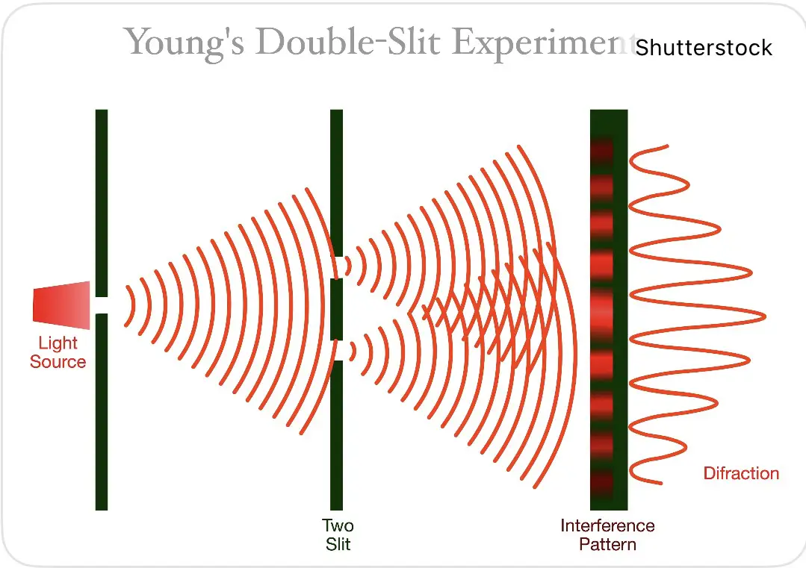
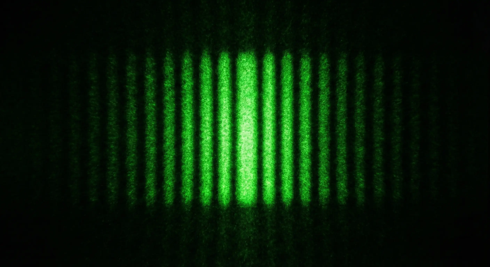
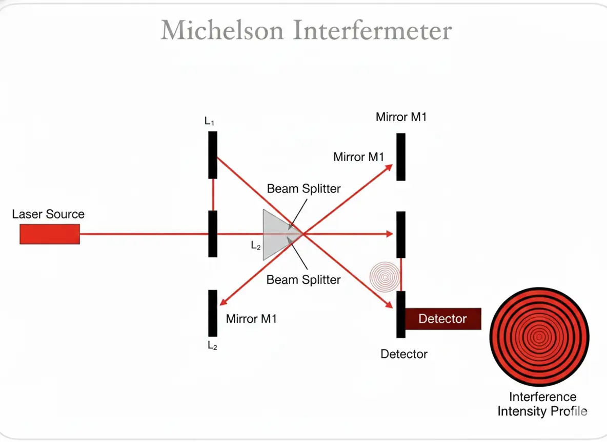
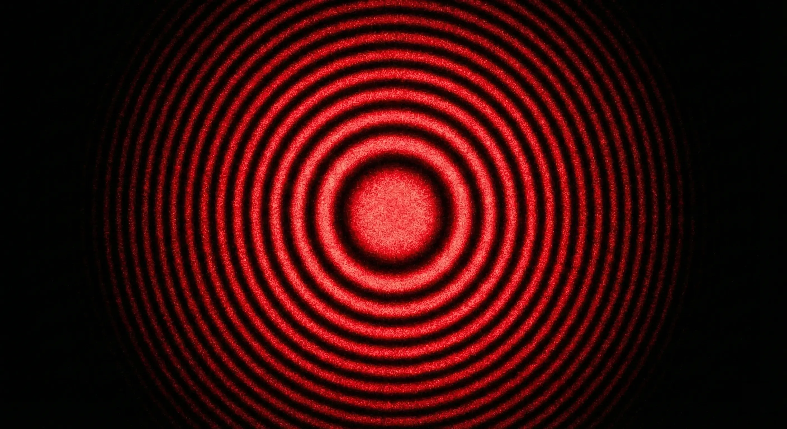

Eyes On Me · 观测者
附录
Appendix · Physics Reference
These are the theories and experiments that underlie the story's cosmology. Each one is a door — a way of asking how the act of observation might shape the world, and how two separate things might remain, against all odds, entangled.
I · Theories · 理论
Six theories
01
Constant Speed of Light
光速不变
$$c = \frac{1}{\sqrt{\mu_0 \epsilon_0}}$$
02
Copenhagen Interpretation
哥本哈根解释
$$P = |\Psi|^2 \qquad \Delta x \Delta p \geq \frac{\hbar}{2}$$
03
Many-Worlds Interpretation
多世界理论
$$|\Psi\rangle_{\text{universal}} = \sum_i |\psi\rangle_i \otimes |\text{env}\rangle_i$$
04
$$\mathcal{H} = L^2(\mathbb{R}^n) \qquad \langle\phi|\psi\rangle \in \mathbb{C}$$
05
$$G_{\mu\nu} + \Lambda g_{\mu\nu} = \frac{8\pi G}{c^4} T_{\mu\nu}$$
06
Schrödinger Equation
薛定谔方程
$$i\hbar \frac{\partial}{\partial t}\Psi(\mathbf{r}, t) = \hat{H}\Psi(\mathbf{r}, t)$$
II · Experiments · 实验
Two experiments
Experiment 01
Young's Double-Slit Experiment
杨氏双缝干涉
$$\Delta x = \frac{L}{d}\lambda$$

[ Diagram · 实验装置示意图 ]
Place image at
assets/images/appendix/
double-slit-diagram.png
实验装置示意图 · Setup

[ Interference pattern · 观测干涉纹样 ]
Place image at
assets/images/appendix/
double-slit-pattern.png
观测干涉纹样 · Interference
A single particle, sent through two slits, interferes with itself — until you look. The act of observation collapses the wave into a single path.
Experiment 02
Michelson Interferometer
迈克尔逊干涉仪
$$\Delta\phi = \frac{2\pi}{\lambda}(2L_1 - 2L_2)$$

[ Diagram · 光路系统示意图 ]
Place image at
assets/images/appendix/
michelson-diagram.png
光路系统示意图 · Optical path

[ Circular fringes · 等倾干涉圆环 ]
Place image at
assets/images/appendix/
michelson-rings.png
等倾干涉圆环 · Fringes
Two paths of the same light, returning to meet itself. Whether they arrive in phase or out of phase depends entirely on where they went — and how long they were apart.